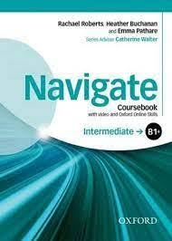

Časovi engleskog i ruskog jezika
DRŽIM ČASOVE ENGLESKOG I RUSKOG JEZIKA ONLINE
CENA ČASA 45 MIN 1200 DIN.
GAVRILOV MARIJA,
PROFESORICA ENGLESKOG I RUSKOG JEZIKA SA VELIKIM ISKUSTVOM
NOVI SAD 065/210-25-23

.jpg)
GRAMATIKA ENGLESKOG JEZIKA
NAPISALA I PRIREDILA GAVRILOV MARIJA
Gramatiku sam napisala u nameri da se na jednostavan
način uči i koristi pri učenju enleskog jezika. Iskoristila
sam svoje dugogodišnje iskustvo rada u školi i
pripremila knjigu u pdf izdanju. Verujem da je svima na
korist pri učenju jezika.
Gavrilov Marija, profesorica ruskog i engleskog jezika u
penziji.
Novi Sad 065/210-25-23
Cena gramatike u pdf izdanju je 1200 din.
.jpg)
Gramatika ruskog jezika u pdf izdanju
NAPISALA I PRIREDILA GAVRILOV MARIJA
Napisala i priredila Gavrilov Marija
Gramatiku sam napisala u nameri da se na jednostavan
način uči i koristi pri učenju ruskog jezika. Iskoristila sam
svoje dugogodišnje iskustvo rada u školi i pripremila
knjigu u pdf izdanju. Verujem da je svima na korist pri
učenju jezika.
Srećno u učenju jezika.
Gavrilov Marija, profesorica ruskog i engleskog jezika u
penziji.
Novi Sad
Cena gramatike u pdf izdanju je 1200 din.
065/210-25-23
Я написалa грамматику для того, чтобы
выучить и использовать ее простым способом
при изучении русского языка. Я использовала
свой многолетний опыт работы в школе и
подготовила книгу в формате pdf, считаю, что
она пригодится всем при изучении языкa.
Удачи в изучении языка.
Гаврилова Мария, пенсионерка,
преподаватель русского и английского языков
Нови-Сад
Цена грамматики в онлайн-издании 1200 din.
Kontakt
Moji podaci: Gavrilov Marija, profesorica Engleskog
i Ruskog jezika u penziji.
Adresa: Futoški put 40/a Novi Sad.
Telefon: 065/210-25-23
E-mail: gavrilovmarija@
gmail.com